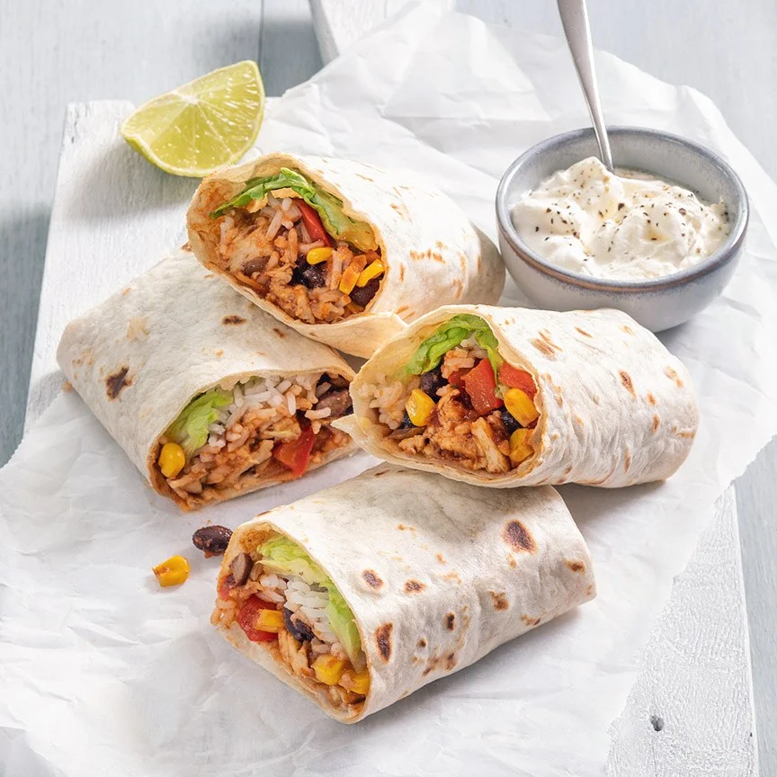

Burrito with Chicken

Description
Delicious Mexican meal of wraps filled and rolled with chicken, rice, beans and cheese
Ingredients
- 4 large tortilla wraps
- 200 gr beans
- 160 gr chicken pieces (vegetarian)
- 1 small head of lettuce
- 100 ml tomato sauce
- 1 garlic clove
- 1 small onion
- 70 gr corn
- 1 bell pepper
- handful of grated cheese
- 0.5 tablespoon burrito or Mexican herbs
- 100 gr rice
- 125 ml sour cream
Steps
-
Cook the rice. Finely chop the onion and chop the bell pepper. Fry these for
5 minutes in a frying pan with a little oil. Add the chicken and cook until
cooked through.
-
Add the herbs and then the tomato sauce. Stir together. Add the drained beans
and corn. Let the mixture heat through for a few minutes.
-
Heat a tortilla. Place 2 lettuce leaves in the middle. Spoon a little rice and
the chicken mixture on top. Sprinkle with a little cheese. Fold the 2 short
sides slightly over the mixture and roll up the tortilla with filling. Wrap
in aluminum foil or 'stick' the edge with a little sour cream so that it does
not open.
-
Halve the burritos and serve with the sour cream. This recipe is for 2 to 3 people.
Back to recipes overview